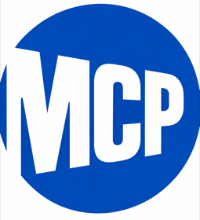

An MCP server that answers one question well: is the subway line we recommend disrupted on that date, at that station?
If your question is "is the L running right now," use mta.info or any transit app. They're free, official, and faster than this.
This server is for a narrower question: a future date, a specific station, and a yes or no you'd put in an email to everyone coming. That's tedious to check by hand and easy to get wrong.
resolve_station reads a
station list generated from MTA's static GTFS and committed to the repo. It makes no network call,
so this answer holds until MTA renames a station.This is the case that trips up a simple implementation.
mta.info/alerts. Filter to the 4, set the date to 09/26.alert_type instead.Once it's installed (see Running it), you don't call the tools yourself. You ask Claude a question in plain English, and Claude picks a tool and fills in the arguments. It works best when the question names a line, a station, and a date.
Illustrative Claude chooses the tool, so the call it makes may differ a little from the one shown. The tool names and parameters are the current ones.
| You ask | The tool Claude would likely call |
|---|---|
| "Is the 6 train running normally to 68 St–Hunter College on Saturday, October 3? It's for our event." | check_route_on_date{"route_id": "6", "date": "2026-10-03", "station": "68 St-Hunter College"} |
| "What's happening on the 6 train this weekend?" | get_service_alerts, once per day{"route_id": "6", "date": "2026-09-26"} |
| "Our flyer says 125 St. Which station is that?" | resolve_station{"query": "125 St"}Four stations match, so it asks you which one. |
| "Are any elevators out at 161 St–Yankee Stadium on the 4 train on September 26? If so, what's the way around?" | get_accessibility_outages{"stop_id": "414", "route_id": "4", "date": "2026-09-26"}The way around is MTA's alternative_route text. |
| "Is 14 St–Union Sq accessible on the 6 train?" | resolve_station{"query": "14 St-Union Sq", "route_id": "6"}ADA status is per station. The 4, 5, and 6 station there is listed as not accessible, and the L and N, Q, R, W stations as fully accessible. |
| "Check the 6 train and the elevators at 68 St–Hunter College for October 3." | check_route_on_date{"route_id": "6", "date": "2026-10-03", "station": "68 St-Hunter College",
"include_accessibility": true} |
| "What elevator outages are scheduled on the 7 train?" | get_accessibility_outages{"route_id": "7", "upcoming": true} |
| "Our flyer says 'take the 6 train to 68 St.' Should we add a travel warning for October 3?" | check_route_on_date with include_accessibility: true, as above.
Claude reads disrupted,
station_level_detail, and MTA's own wording for when a change applies,
and should tell you to confirm at mta.info closer to the date. |
If a station name matches more than one station, the tool returns the candidates instead of guessing, and Claude should ask you which one you meant.
check_route_on_date({
"route_id": "6",
"date": "2026-09-19",
"stop_id": "628",
"include_accessibility": true
})Service alerts feed timestamped 2026-09-16, elevator feed saved 2026-09-17, station ADA snapshot pulled 2026-09-22. Provenance fields and the alert's full text are cut here.
{
"route_id": "6",
"date": "2026-09-19",
"disrupted": false,
"station": {
"stop_id": "628",
"stop_name": "68 St-Hunter College",
"routes": ["4", "6", "6X"],
"accessibility": { "status": "fully_accessible", "mta_notes": null }
},
"station_level_detail": true,
"alert_count": 1,
"alerts": [{
"alert_type": "Planned - Part Suspended",
"effect": "reduced",
"header_text": "No [6] between Hunts Point Av and 125 St",
"human_readable_active_period": "Sep 18 - Oct 19, Fri 9:30 PM to Mon 5:00 AM",
"affected_stops": [
{ "stop_id": "614", "stop_name": "Longwood Av" },
…five more Bronx stations…
],
"affects_this_station": false,
"relevant_to_station": false
}],
"accessibility_outages": {
"outage_count": 0,
"outages": [],
"note": "… No outage is listed here. A missing outage is not proof
the station is usable: the feed can lag, and an outage MTA hasn't
entered won't show. Confirm at
https://www.mta.info/elevator-escalator-status before travel."
},
"disclaimer": "Unofficial. BetaNYC is not the MTA …"
}disrupted is false for this
station. Guests coming from the Bronx on the 6 would still hit the gap, and MTA's alert
text says free shuttle buses cover it. MTA lists the station as fully accessible, and no
elevator outage was listed that day. That isn't proof the elevators work, so a flyer
should still say to check mta.info before traveling.get_accessibility_outages({
"stop_id": "414",
"route_id": "4",
"date": "2026-09-26"
})Elevator feed saved 2026-09-17. Station ADA and equipment inventory snapshots pulled 2026-09-22. The last of five outages shown, and MTA's alternate route text is cut.
{
"date": "2026-09-26",
"query": "161 St-Yankee Stadium",
"stop_id": "414",
"route_id": "4",
"station_accessibility": { "status": "fully_accessible", "mta_notes": null },
"outage_count": 5,
"date_caveats": [],
"outages": [
…four more elevators…
{
"station": "161 St-Yankee Stadium",
"trainno": "B/D/4",
"equipment": "EL133",
"equipmenttype": "EL",
"serving": "mezzanine to Manhattan-bound 4 platform",
"ADA": "Y",
"outagedate": "11/06/2024 09:00:00 AM",
"estimatedreturntoservice": "09/30/2026 11:59:00 PM",
"reason": "Capital Replacement",
"matched_by": "name",
"match_note": "MTA's equipment inventory places EL133 at 161 St-Yankee Stadium (D11), another station in this complex. The outage feed's station name fits this station too, so it is listed here.",
"inventory": {
"stop_ids": ["D11"],
"ada_compliant": "YES",
"redundant_elevator": "-",
"alternative_route": "To access street level: Take a Manhattan-bound
4 to 125 St. Use elevators to transfer to a Bronx-bound 6. Exit at
Hunts Point Av and transfer to a Washington Heights-bound Bx6-SBS
bus to E 161 St and River Av. …"
}
}
]
}Every parameter and every field in every answer is in the tool reference. The elevator, escalator, and ADA data, and where it falls short, are in docs/accessibility.md.
Questions this server can't answer:
| Not this | Why |
|---|---|
| "When is the next 6 train?" | No arrivals or trip updates. Those are protobuf-only feeds and would pull in three
custom .proto files for a feature this tool does not need. |
| "Is the M15 bus delayed?" | Bus Time needs an API key and is out of scope. Bus alerts are in the same keyless family and could be added. |
| "Are Times Sq and Port Authority connected?" | Stations linked only by transfer, under different names, are not modeled. 60 such pairs exist. Asking about one name will not surface alerts filed against the other. |
| "Can I get step-free to the platform today?" | Only in part. Each station carries MTA's ADA status, and elevator outages come with MTA's alternate route, but the status is a dated snapshot and a missing outage is not proof the station is usable. Confirm on MTA's elevator and escalator status page. |
| "Is my station definitely fine?" | MTA tags stations only when it considers the change significant. Every response carries
station_level_detail so a quiet answer is never mistaken for a guarantee. |
BetaNYC publishes seven MCP servers to npm. This one is intentionally not one of them, because of MTA's data terms.
MTA's data feed terms, term 1:
"In developing your app, you will provide that the MTA data feed is available to others only from a non-MTA server. Accordingly, you will download and store the MTA data feed on a non-MTA server which users of your app will access in order to obtain data. MTA prohibits the development of an app that would make the data available to others directly from MTA's server(s)." (Emphasis ours.)
A published package would have every user's machine fetch straight from
api-endpoint.mta.info, with no server of ours in between. You could argue that each
user is just fetching for themselves. We don't think that holds up, because the clause defines the
non-MTA server as the one "which users of your app will access in order to obtain data."
That covers those same users.
So package.json sets "private": true, and an accidental publish
fails.
This is v0.1.0 alpha. Nobody outside BetaNYC has used it yet, and we're sharing it now to find out what breaks. Tool names, parameters, and response shapes may change without notice, so please don't build anything important on it yet.
alert_type values we saw across two
live pulls. MTA can send others. An unrecognized value counts as a disruption, which keeps
answers cautious but isn't the same as coverage.Found something wrong? Open an issue.
You need Node 18 or newer, and no API key.
git clone https://github.com/BetaNYC/mta-mcp.git cd mta-mcp npm install # also builds
For Claude Code, in a project's .mcp.json:
{
"mcpServers": {
"mta-mcp": {
"command": "node",
"args": ["${HOME}/Code/mta-mcp/dist/index.js"]
}
}
}
For Claude Desktop, in claude_desktop_config.json. Claude Desktop doesn't expand
${HOME}, so use the full path to your copy:
{
"mcpServers": {
"mta-mcp": {
"command": "node",
"args": ["/absolute/path/to/mta-mcp/dist/index.js"]
}
}
}
Restart the app and ask something from Try asking, like "Is the 6 train running normally to 68 St–Hunter College on Saturday?"
Using Claude Code and want to keep conversations lighter? The same tools also come as a skill, with no MCP server to run. See skills/README.md.
MTA publishes no rate limit, no refresh cadence, and no cache headers, so the server sets its
own limits. Six are on by default: a 60-second
response cache, single-flight de-duplication, a process-wide one-second floor between requests,
bounded retry that honors Retry-After, a 15-second timeout, and a
User-Agent that identifies the project.
There's no background polling, prefetch, or warm-up fetch. It fetches only when a tool is called. The test suite makes no network requests, so continuous integration never touches MTA.
For most subway questions, one of these is a better fit. Several are further along than ours, and all of them do live arrivals, which this server doesn't. If your question is "when is the next train," start with one of these.
| Project | Language | What it does that this one does not |
|---|---|---|
| where_is_my_train_mcp
sasabasara · also on Smithery |
TypeScript | The broadest of these. Live arrivals with crowding where available, fuzzy station search, elevator status, transfers, and nearby-station lookup by latitude and longitude. |
| nyc-subway-mcp-server
hardparking |
TypeScript | Real-time arrivals, live vehicle positions, and a line-status overview. Runs over HTTP as well as stdio. |
| metro-mcp
Aarekaz |
TypeScript | Covers DC Metro as well as NYC. Anonymous, read-only, deployed on Cloudflare Workers, so there is nothing to install. |
| mta-mcp
nkasmanoff · same name as ours, no relation |
Python | Next-train arrivals by station and direction. Small and readable, which makes it a good first thing to look at if you are learning how these fit together. |
What this server adds: it takes a date. The servers above answer about right now. Of the four, none documents a date parameter in its README, and none says it separates service that got worse from service that got better at a station. That's the gap this server fills.
Where to take your question:
| Your question | Where it goes |
|---|---|
| A tool returns the wrong shape, a schema is wrong, this server crashes | Our issue tracker Especially while this is alpha. For an alert-matching question, include the entity_id from the response so we can find the alert in the raw
feed. |
| A feed field is undocumented, an alert looks wrong, MTA's API behaves oddly | MTA Developer
Google Group MTA points developers to this public Google Group. You'll get a better answer there than in our tracker, and it helps everyone else building on the same feeds. It's also where we'd take the open questions in "What we could not verify" above. |
| You want to build civic tech in New York with other people | BetaBuilders BetaNYC's community, below. |
In BetaNYC's own words, "a BetaBuilder is a New Yorker who sustains the city's civic infrastructure." The BetaNYC Discord is where we plan classes, fellowships, and open data work, post projects and job openings, and talk through tools like this one while they're still rough.
There are several ways to join:
Learn more about BetaBuilders →
Data from the MTA service alerts feed, free to use under MTA's terms. Station names from MTA's published static GTFS. MTA's own implementation notes live at nymta/gtfs-documentation, alongside MTA's developer pages.
BetaNYC builds and maintains this project. We're New York's civic technology and open data community, and we work to improve lives in New York through civic design, technology, and data.
| Where to look | What is there |
|---|---|
| About BetaNYC | Who we are, the team, and how the organization is structured. |
| Our work | Programs, research, and the open-data work this tool exists to support. |
| Events calendar | What is coming up. Attending a class is also one of the doors into BetaBuilders. |
| NYC School of Data | Our annual open-data conference, free and open to the public. |
| CityCamp NYC | The unconference where New Yorkers and city government work on civic problems together. Getting people there is the reason this server was built. |
| github.com/BetaNYC | Everything else we publish, including seven MCP servers for NYC civic data that are on npm. |
These tools are free and open source. If you want to help keep the work going, donating is the most direct way.
Link note. Every outbound link on this page was HTTP-checked on
2026-09-21. The mta.info and claude.ai links return 403 to a command-line
request because of bot protection, not because they are dead; both were confirmed in a real
browser. MTA redirects www.mta.info to mta.info, so the bare form is
used here.
AI disclosure. This server and this page were largely written with Claude. Every response shape shown here comes from a real call, which is what the badges mark.